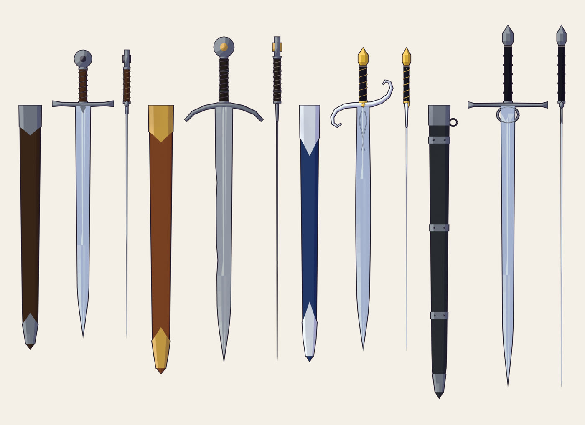

HOLLOW
Path of the Sword
A 3D sword-duelling game built around stamina, stances and reading your opponent. Toon-shaded, built in Godot 4.

Combat
One-on-one duels against AI swordsmen. Three systems drive every exchange: stamina, stance, and reading the other blade. All numbers below are current values and will change with tuning.
Stamina and breath
- Breath Return. Every attack's stamina is held as breath you can win back. Tap guard on the glint, 0.06–0.26 s after a strike ends, to recover 90% of what the whole string spent. Up to 0.9 s late recovers 40%. After that, nothing. A return also cuts the strike's recovery short.
- Stance Flow. Change stance on the glint instead and the breath comes back automatically, with 25% more.
- Passive recovery is slow: 40 per second, 14 while guarding, starting 0.7 s after an attack and never during one.
- Breathless. Run dry and you stagger for 1 s, and blows land 25% harder on you. A guard drained to zero breaks the same way.
- Their ki. Your hits, and your blocked hits, drain the opponent's ki on its own bar. At zero they break and are open to a finishing grab.
Stances
Heaven is slow and crushing. Man is balanced. Earth is quick and low. Each throws a different kind of blow and trades something away:
| Heaven | Man | Earth | |
|---|---|---|---|
| Stamina a blocked blow drains | ×1.35 | ×0.7 | ×1.15 |
| Health a blocked blow still takes | ×1.5 | ×0.6 | ×1.0 |
| Just Guard window | 0.10 s | 0.20 s | 0.13 s |
| Dodge stamina | ×1.3 | ×1.0 | ×0.6 |
| Dodge speed | ×0.9 | ×1.0 | ×1.1 |
| Ki your blows drain | ×1.15 | ×1.0 | ×0.9 |
| Walking speed | ×0.94 | ×1.0 | ×1.08 |
Switch cuts. Change stance mid-string and attack within 0.45 s to throw the new stance's switch cut, which carries straight into its string: Parting Clouds (into Heaven, a rising two-handed diagonal), Threading the Needle (into Man, a stepping thrust) and Sinking Stone (into Earth, a falling diagonal into a low crouch). A string can turn mid-flow onto the opponent's weak side.
Reading and countering
- Minimum wind-ups. However fast the opponent, each kind of blow takes at least: slash 0.20 s, thrust 0.26 s, sweep 0.32 s, overhead 0.34 s, grab 0.42 s, perilous (red) 0.50 s.
- The tell. Through the wind-up their blade glows in the colour of the right answer and brightens. It flares 0.22 s before impact, with a spark and a ring. Answer the flare, not the wind-up, and delayed strikes stop working.
- The answers. Parry or guard a slash, dodge into a thrust, dodge aside from an overhead, and use the stance counter on a red blow.
- Punish windows. When an opponent's string ends they are spent: no attacking, no defending. It lasts 0.3 s, or 0.7 s for the quickest fighters, and 0.2 s longer if their last blow missed. A hit in that window is a punish, worth 20% more.
One input counters a red blow, differently in each stance:
| Heaven: Meeting the Storm | Man: Qi Deflect | Earth: Falling Leaf | |
|---|---|---|---|
| What it does | Lunges in and breaks the blow head-on | A wide parry that turns anything aside | Slips past to their side, untouchable |
| Window | 0.04–0.32 s | 0.05–0.34 s | 0.00–0.30 s |
| Stamina | 12 | 4 | 6 |
| Their ki · opening | −55 · 1.7 s | −45 · 1.5 s | −40 · 1.2 s |
| Against an ordinary blow | Braced: half damage, keeps lunging | Parried | Slipped, no reward |
Opponents
Duelists are built to fight like skilled players, with the same tools you have.
- Stance. In Heaven their wind-ups are 12% longer and hit 20% harder. In Earth they are 12% quicker and 15% lighter. They switch-cut into the stance that beats yours.
- Breath. They return their own breath after a string, winning back 80%. Hit them first and the return is denied. Below 30% ki they give ground until they're back to 60%.
- Spacing. They hover just outside your reach, waiting for you to swing, and step back out after an opening.
- Whiffs. Swing at nothing within 4.5 m of them and they may step in with their quickest blow during your recovery.
- Feints and delayed strikes, scaled by difficulty.
- Best of three. Every arena duel is three rounds. After each round, a tally shows damage, reads, parries, Just Guards, counters, punishes, returns, whiffs, and which of your habits they read.
| Apprentice | Duelist | Master | |
|---|---|---|---|
| Deflect and dodge chance | ×0.65 | ×1.0 | ×1.2 |
| Feints | ×0.4 | ×1.0 | ×1.3 |
| Breath returns | Never | 45% of openings | 85% |
| Punish a whiff | 25% | 60% | 90% |
| Switch cuts | ×0.35 | ×1.0 | ×1.4 |
| Their openings | ×1.4 | ×1.0 | ×0.85 |
Hits and dodges
- The blade is the hitbox. A cut lands only where the sword actually passes. The blade is swept frame to frame as a thin capsule, from guard to tip, through the strike's active window.
- Hurtboxes follow the body: 1.75 m tall, lowered to 1.0 m in a roll and 1.25 m in a crouch, so a high cut passes over a roll and a low sweep misses a jump.
- I-frames: roll 0.14 s, sidestep 0.12 s, backstep 0.17 s, with stance bonuses (Earth +0.05 s). A dodge only counts when the blade really passes through you, and a dodge only reads a blow within its range plus 0.6 m.
- Step-in. Attackers close the last gap during the wind-up so blades meet bodies instead of landing short.
Animation
- Motion capture. Every attack in the basic kit plays a motion-captured strike, sliced to one cut and fitted to the move's frame data. 145 clips are imported so far. Hand-keyed clips cover switch cuts and the few shapes capture doesn't.
- Planted feet stay planted. Foot sliding during strafes, cuts and turns measured 1.6–4.2 m per sequence before. It now measures 0 m.
- Per-stance movement. Earth dodges in a low skim and sidesteps with a crouched hop. Heaven and Man roll. Changing stance flourishes the blade into the new guard.
Manuals
A sword manual sets your strings, heavies and dodges. The first, Acrobatic Swordsmanship, mixes sword cuts with capoeira: kicks crack posture and the blade does the cutting. Kicks are traced like blades, so they land where the foot really goes.
Characters
Low-poly and toon-shaded, with ink outlines and lilac shadows. Each is modelled in Blender from a concept sheet and rigged to the game's skeleton.

Swords
Blades and scabbards in the same style, with an aura that lights the blade.

Status
- In development. Not released yet.
- Engine: Godot 4, for Windows, macOS and Linux.
- Now: tuning combat, and bringing the new characters and swords into the game.
- Later: sword schools, built on top of the new combat.